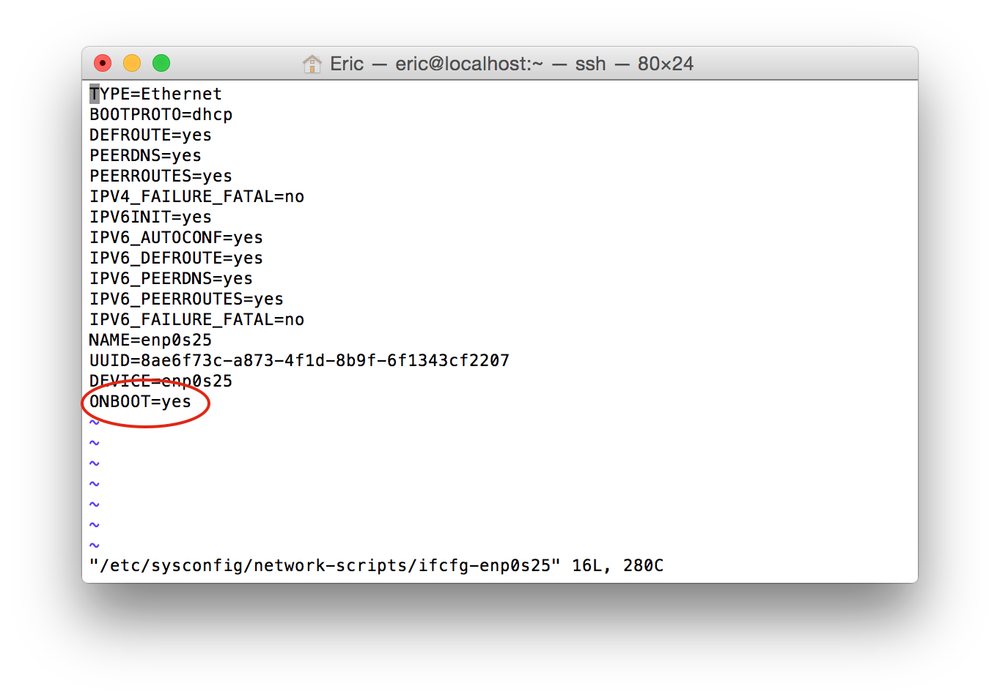
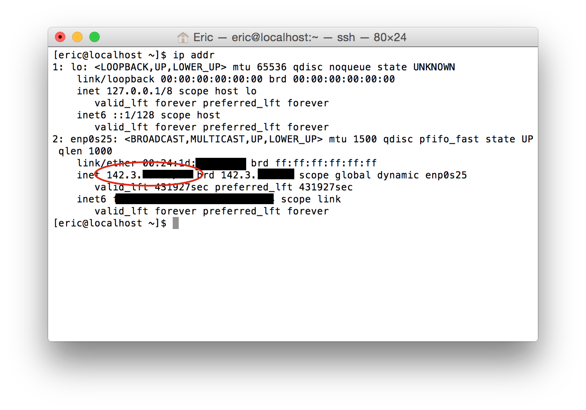
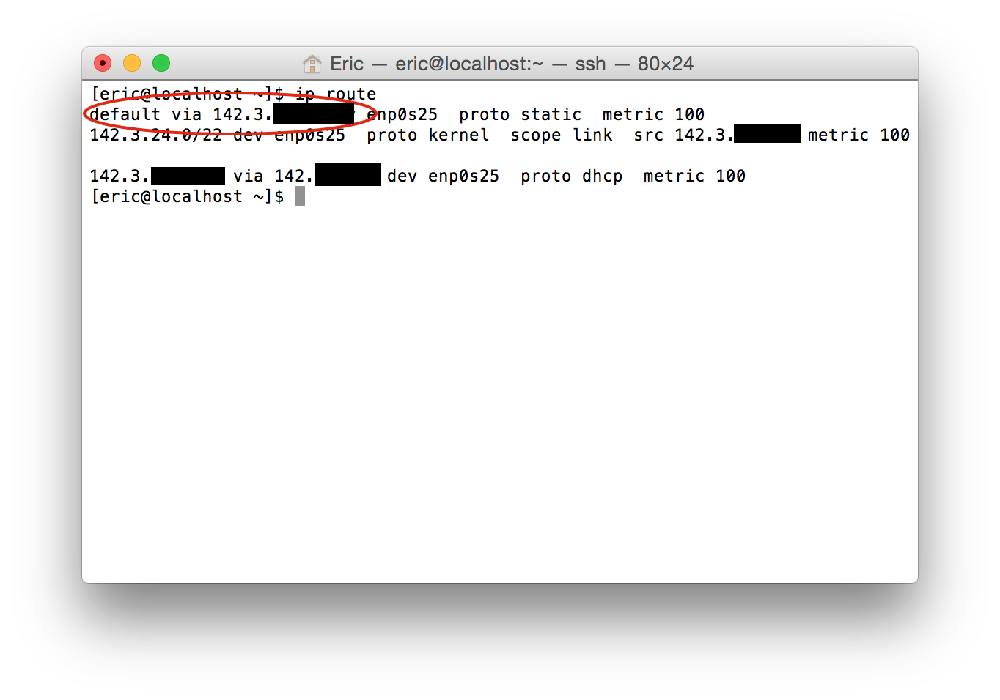

The second exercise assigned for the second lab was to use the ethernet cable built in exercise one to connect your machine to the internet.
Requirements
The requirements to connect to the network are:
- Completion of all lab #1 components.
- A functioning network cable.
Getting Online
To connect the server to the internet the following steps were taken:
- Ensure you have your functioning network cable connected to both the switch on the bench and the port on the machine.
- Login to the machine with either the root account or one that has administrative privileges (is in the wheel group)
- Locate and edit the network configuration script for the ethernet interface.
- The script will be in the directory: /etc/sysconfig/network-scripts. Change the current working directory to here with this command:
$ cd /etc/sysconfig/network-scripts - As our boxes only have a single ethernet interface we can find the correct file using the autocomplete feature of the BASH shell. Begin by entering the command:
$ vi ifcfg-enp<tab>and pressing the tab key where shown. This will autocomplete the file name to the name of the only matching file in the current directory, in my case ifcfg-enp0s25, and press the return key to open the file the vi editor. Note: if you are not logged into the root user account this command must be prefixed with the sudo (super user do) command.
- Move the cursor using the arrow keys to the line in the file that currently reads: ONBOOT=false and press the 'I' key on the keyboard to enable insertion mode.
- Modify the line to read ONBOOT=yes 
- Exit insertion mode by pressing the ESC key.
- Save the changes and quit vi by pressing the following sequence of keys: ':wq
' - Reload the network configuration by using the command. Note: The following commands needs to be prefixed with a sudo command if you are not logged in as the root user.
$ service networking restart
- The script will be in the directory: /etc/sysconfig/network-scripts. Change the current working directory to here with this command:
- Update the system packages to ensure the highest level of network security. This command also requires the sudo prefix if not logged in as root.
$ yum upgrade - Find the current public ip address of the machine by using the command: (It should be of the form: 142.3.xxx.xxx)
$ ip addr
- Find the current default route for the machine (the default gateway) by using the command:
$ ip route
After the completion of the above steps your machine is now connected to the internet, and has a public ip address, which allows it to be directly connected to by any machine connected to the internet.
In this case step 3 and all of its sub-steps are necessary to enable the ethernet interface on boot, rather than having to manually enable it upon every boot. This is something that is new for CENTOs 7 as it has transitioned to having all the network interfaces managed by NetworkManager, in our case however, we do not have network manager installed, and so we must make this change manually.